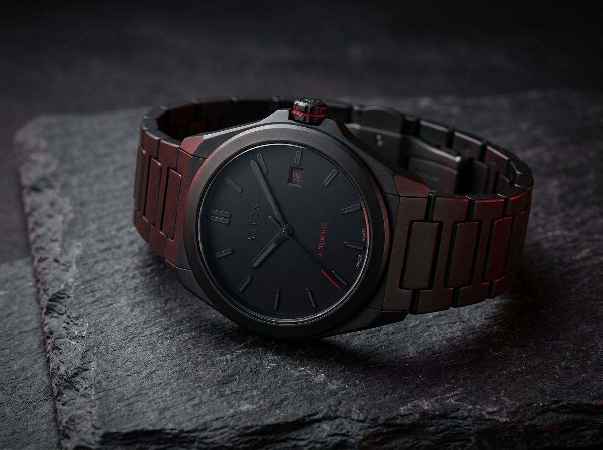
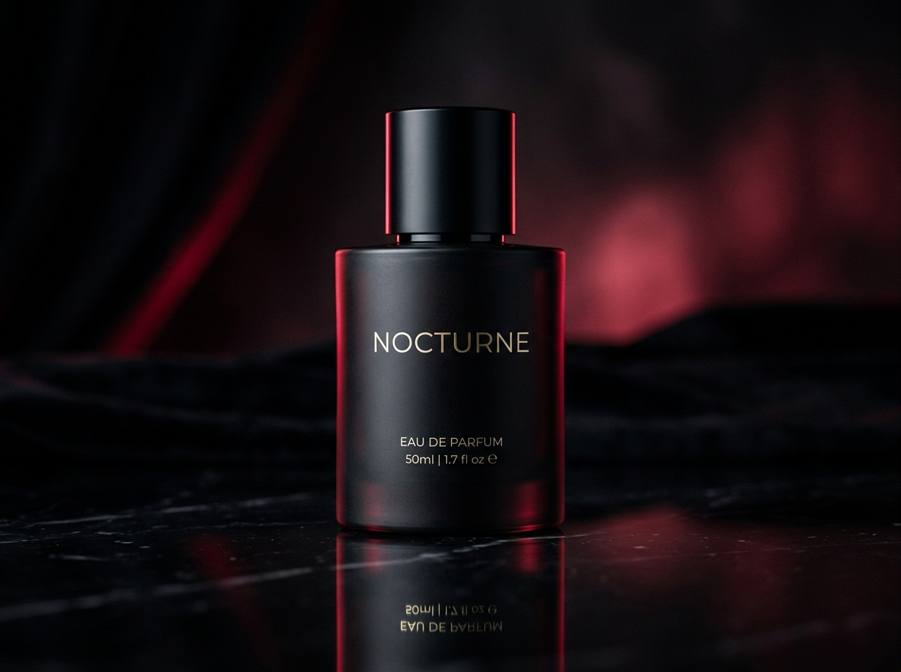
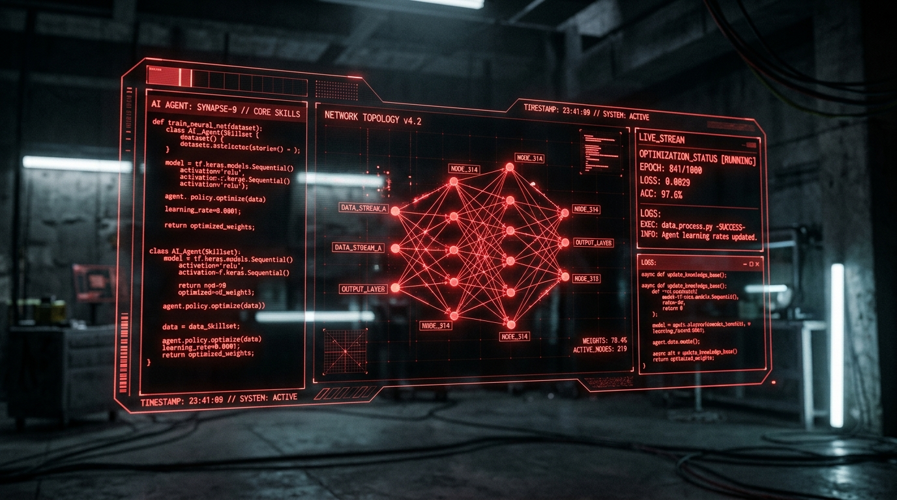

En Búfalo Studio no hacemos plantillas. Forjamos ecosistemas digitales donde el desarrollo de alto rendimiento, la dirección de arte y la ciencia de datos convergen para escalar tu negocio.
Construimos interfaces ultrarrápidas y escalables. Ya sea que necesites la velocidad inigualable de sitios estáticos con Astro y HTML/Tailwind, o la flexibilidad autogestionable de ecosistemas complejos en WordPress. Tu plataforma será robusta, segura y diseñada para dominar el posicionamiento orgánico.
Cero JavaScript innecesario en el cliente. Tiempos de respuesta en milisegundos e indexación inmediata en buscadores.
Gestión de contenidos intuitiva desacoplada del frontend, combinando flexibilidad editorial con máxima seguridad.
Estructura HTML5 semántica limpia, etiquetas de datos enriquecidos Schema.org y optimización Core Web Vitals.
Tokens de diseño rigurosos, clases de utilidad customizadas y componentes reusables mantenibles a largo plazo.
La primera impresión entra por los ojos; la conversión, por la confianza. Producimos fotografía de producto de alta gama con precisión milimétrica. Desde la iluminación en estudio hasta la postproducción avanzada, cada imagen está optimizada para integrarse sin fricción en tu interfaz web.


El diseño no es subjetivo; es medible. Aplicamos ciencia de datos para extraer valor real de tus métricas. A través de análisis predictivo y visualización de datos complejos, convertimos la información en decisiones estratégicas de diseño (UX/UI) y negocios.
Diseñamos e integramos habilidades personalizadas de Inteligencia Artificial calibradas para la arquitectura de tu negocio. Desde flujos de trabajo autónomos estructurados bajo metodología Kanban en pizarras de alto impacto visual, hasta pipelines de datos complejos y agentes con memoria persistente. El Búfalo no solo crea la interfaz; entrena la mente digital que opera detrás.

Mapeamos cada interacción y tarea del agente en tableros transparentes, eliminando la opacidad en la toma de decisiones con IA.
Desarrollamos algoritmos específicos para tu industria: desde extracción automática de prospectos hasta pipelines de analítica predictiva.
Nuestros agentes retienen el contexto histórico de tu empresa, garantizando respuestas consistentes y alineadas con tu visión de marca.
Cuéntanos sobre tu visión. Nosotros ponemos la infraestructura, el arte y los datos.